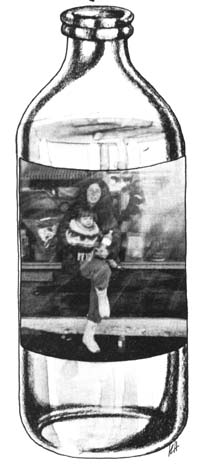
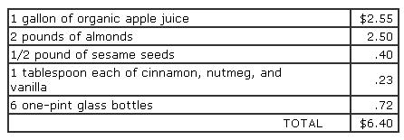
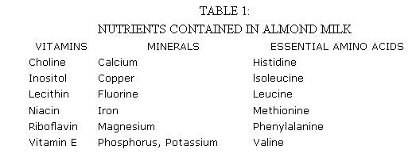

Two or three years ago in this magazine, Michele Sevin explained the ins and outs of the natural candy business. (See "How To Start Your Own Natural Candy Factory", MOTHER NO. 29, pages 36-38.) Now Michele's back to tell us how it's possible to make $20 a day and more by blending, bottling, and selling a nutrition-packed apple/nut "milk".
We've discovered how to combine fresh almonds with apple juice to create a non-dairy milk that's fantastically good tasting. It's also chock-full of essential vitamins, amino acids, enzymes, minerals, and fruit sugars ... and ripe with home business possibilities, too! To show you what I mean, I'd like-if I may-to tell you how Michael and I happened onto almond milk, and how we reaped a "healthy" profit selling the drink to health food stores in and around Vancouver, British Columbia.
It all started one cold, rainy November day shortly after Michael and I had returned-penniless-to Vancouver following a summer of nomadic wanderings in Cinnamon, our VW van. I'd had-and was able to endure-a sporadic throbbing in one of my eyeteeth for quite some time, but upon our arrival home the pain had become agonizing and unbearable.
The next day we went to see the dentist, who looked into my mouth and promptly prescribed $250 worth of root canal work. "No way!" Michael exclaimed ... and that was the end of that.
So-rather than spend money we didn't have-I immediately embarked on a cleansing fast and scoured the herbal guidebooks for alternate methods of dealing with tooth problems. I ended up with a dental plan that included the following: a calciumand silicon-rich tea made from horsetail, oat straw, and comfrey leaves (to nourish the gums and teeth) ... a mouthwash-and poultice-containing powdered myrrh and goldenseal, for their healing and antiseptic qualities ... chaparral for pain ... and a tea of specially blended herbs, rich in B vitamins, to nourish and build nerve tissue. (These herbs included-among others-black cohosh, catnip, cayenne, hops, lady-slipper root, lobelia, mistletoe, red clover, skullcap, valerian, and wood betony.)
Over the next few days my face swelled "out to here" and the pain became excruciating, but finally-to my immense relief-an abscess broke through the gum and drained. Ten days of "herbal therapy" later, the swelling had completely subsided and my tooth stopped throbbing. I felt weak ... but the worst was over.
On the night of my "recovery", I spied some almonds in the house
where Michael and I were staying. I found the nuts-to say the least-powerfully alluring. "Michael," I said, "do you think I could have some almonds?"
"Absolutely not," he replied. "That'd be too much chewing, and anyway almonds are too heavy a food for you to break your fast with."
"Perhaps you could make a nut butter out of them in the Champion juicer," I suggested. And Michael did ... but the ground almonds-while easy enough to swallow-did feel quite heavy in my stomach. In an attempt to remedy this situation, Michael put a few spoonfuls of almond butter in the blender along with some apple juice ... and produced a beverage that was light and strengthening, and as satisfying as the creamiest malted milkshake!
I doubt if Michael slept a wink that night. "Look," he whispered, waking me up, "Suppose we sell 'almond milk' at the health food stores. Think of it! It could do wonders for babies ... or nursing mothers!"
"Or anyone," I added.
Fifteen minutes later-after I'd dozed off-Michael woke me again to say that perhaps the drink's flavor could be enhanced by the addition of cinnamon and nutmeg. And fifteen minutes after that he had yet another great idea. (This one-sided conversation went on all night.)
The next day, we made up a batch of apple/nut milk to sell at the neighborhood natural food store ... and it was a rousing success! We offered samples in little cups, and watched with delight as everyone in the store partied on the creamy, rich beverage. (The cashier-who hailed from eastern India-asked us if we'd ever been to Benares. "There," he told us, "people make a drink consisting of almond milk and a little hashish . . . .")
A day later, our leftover nut milk was as fresh tasting as when it first left the blender (although the "cream"-as with fresh cow's milk-had risen to the top). That's yet another of almond milk's many virtues: It never seems to go bad ... even after a week in the refrigerator!
Since our initial "discovery" of the beverage, we've done some experimenting and come up with a few improvements to the basic almonds-and-apple-juice recipe. For example, we've found that-just as Michael had thought from the beginning-cinnamon and nutmeg do enhance the drink's taste. (A touch of vanilla helps, too.)
Also, we decided to include sesame tahini in the milk to both improve its flavor and boost its calcium content. (Sesame tahini, incidentally, is a creamy spread made by blending together a tablespoon and a half of lime juice, six tablespoons of water, onehalf cup of finely ground sesame seeds, and a teaspoon each of oil and dried kelp.)
Our justification for the sesame tahini went something like this: The body uses both phosphorus AND calcium to build teeth and bones ... and an excess of either mineral in the diet leads to excretion of that mineral. Yet we know that almonds contain twice as much phosphorus as calcium. By adding sesame tahini (which is rich in calcium) to the drink, then, we strike a balance between phosphorus and calcium . . . leading to more efficient utilization of both nutrients by the body.
Likewise, we later added Brazil nuts to our recipe, since they contain an extra essential amino acid-methionine-and thus add something to the milk's protein content.
The result of all this is that we now have a nutrition-packed "nut nog" that's as vitalizing as it is delicious. (A few of the many nutrients contained in the juice are listed in Table 1.)
Almond milk is easy to make ... all you need in the way of "special equipment" are a grain mill and a blender. (We've found that for home use, the Corona handoperated corn mill $17.50 from the R & R Mill Company, 45 West First North, Smithfield, Utah 84335-does a very satisfactory job of grinding almonds, sesame seeds, and Brazil nuts.) Strictly speaking, though, you don't really even have to have a mill. We've found that if we let the almonds soak overnight in apple juice, it's possible to whip up a batch of "milk" solely with the aid of a blender!
To make about five quarts of almond milk, all you have to do is blend together the following ingredients:
[1] One gallon of organic apple juice
[2] Approximately 2 to 2-1/2 pounds (about 4 to 5 cups) of almonds, either finely ground or in the form of a nut butter
[3] One-half pound (7 to 8 tablespoons) of finely ground sesame seeds or 4 to 5 tablespoons of sesame tahini
[4] One tablespoon of Brazil nuts, finely ground or in the form of a butter (optional)
[5] One tablespoon of powdered cinnamon
[6] One tablespoon of powdered nutmeg
[7] One tablespoon of vanilla
[8] One tablespoon of lecithin (optional).
After blending, strain the milk and bottle it. (Note: Refrigerate the juice as soon as possiible, unless you intend to drink it right away.)
We usually decant the 160 ounces of rich, creamy liquid into two quartsized (32-ounce) bottles and six pintsized (16-ounce) bottles, which we then sell to the health food store for $2.25 per quart or $1.15 per pint. (The quarts and pints retail for $2.85 and $1.55, respectively.)
Our "per batch" cost breakdown (all prices are wholesale) goes something like this:
Obviously, the batch cost could be reduced further if we recycled the pint containers, but this isn't always possible. (Usually, though, we are able to reuse the quart bottles.)
We sell the 160 ounces of nut nog to stores for $11.40 (two quarts at $2.25 each plus six pints at $1.15 each). So you can see that our profit per five-quart batch comes to an even $5.00 ... which ain't bad for about two hours' work. (Remember, this is the kind of "work" you do in your own home, at your own pace, while you sip juice and make small talk with a friend.) Your profit could be considerably higher, if you could get one or more ingredients-the apple juice, say-at a lower cost.
Anyone going into the nut nog business in a big way would probably be wise to convert the almonds and Brazils into a finely ground butter prior to making up batches of milk. This does two things: It eliminates the need for (and time spent on) a straining step, and it makes the nuts go a bit further (since you don't end up straining out-and throwing away-tiny nut fragments).
Michael never stopped experimenting with different versions of the milk and-as a result-our nut nog never came out the same way twice. One of Michael's most brilliant gastronomic achievements-and something you'll want to try yourself-was his nondairy yogurt. Simply [1] buy a package of yogurt (or kefir) starter at your local health food store, [2] sterilize a quart bottle, [3] heat some unstrained almond milk to 180° (too hot to touch, but not boding), then [4] when the milk has cooled to room temperature, pour it into the sterile container and add the yogurt or kefir starter. Store the liquid at room temperature for 24 hours, and voila! Almond milk yogurt! (Hint: To make more yogurt, repeat the above procedure using three tablespoons of almond yogurt in place of the starter.)
We also occasionally make a scrumptious "chocolate almond milk" by adding roasted carob powder to the basic milk recipe. (Invariably, this was-when we were making it-our best seller. You should've heard the "oohs" and "aahs" whenever we walked into the store carrying armloads of chocolate nut milk!)
Another variation that's definitely worth trying is carob-mint almond milk. Just add five drops of pure peppermint oil extract to a pint of carobflavored nut nog, shake, and pour. (You've got to taste it to believe it!)
So there you have the story: the complete story-in a nutshell-of how Michael and I got hooked on almond milk. We've made a healthy profit selling this healthful beverage, and there's no reason why you can't do the same. All you really need are almonds, apple juice, a blender, and a little determination. (Plus, perhaps, an aversion to $250 dental bills!)
|
 |
 |
 |